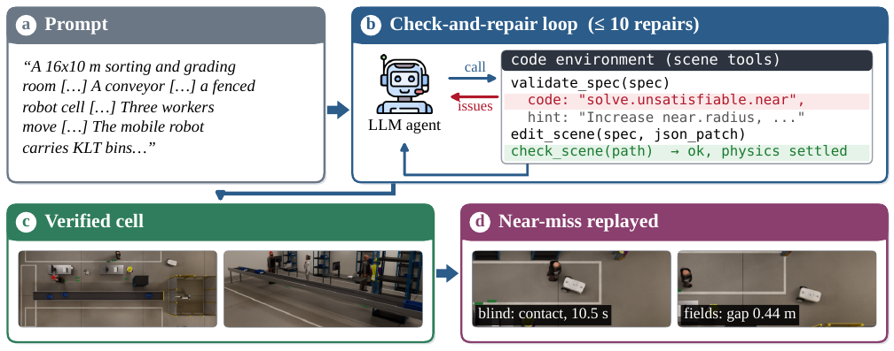
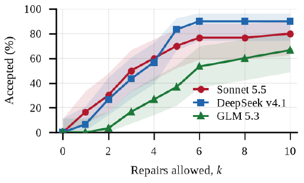
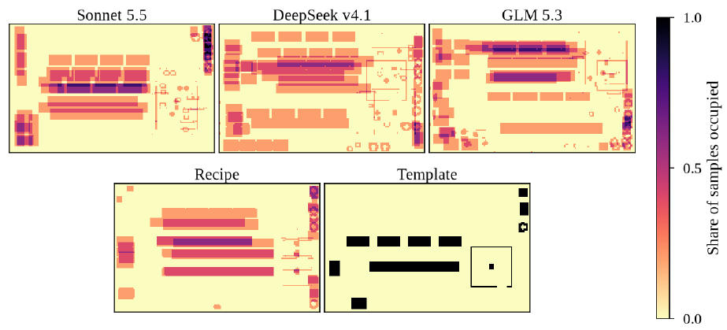
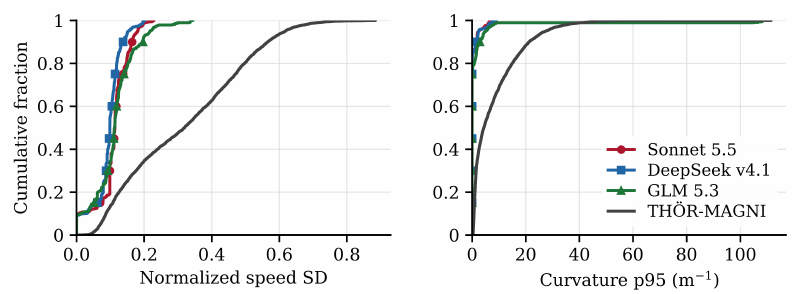

Video examples
Collision-aware scene demonstrations
8 × 6 m · one workerSource dataset run ↗
26 × 14 m · six workersSource dataset run ↗
16 × 10 m · three workersSource dataset run ↗
Abstract
Simulation is a standard tool for testing industrial layouts and training perception models, yet building realistic remanufacturing workcells remains manual. We present an agentic pipeline in which an LLM agent writes a declarative workcell specification, compiles it into an OpenUSD scene in NVIDIA Isaac Sim, and repairs it until it passes static, physical and safety checks. Across 30 prompts and 3 LLMs, no model produces a valid scene zero-shot; with up to 10 repairs, acceptance reaches 67–90%, with layout diversity and plausibility comparable to a non-LLM procedural generator. We then check the accepted scenes rather than treating them as ground truth: they separate shared-floor navigation policies by collision and freezing behaviour, reveal that synthetic workers move more uniformly than real motion-capture data, and yield sim-to-real person-detection gains that depend on the detector.
Method
Generating workcells from natural language
Scene construction begins with a structured description of the room, its equipment, worker routes, and robot goals. The agent can specify spatial relations as well as explicit positions. A layout solver resolves those relations, and a compiler produces the OpenUSD scene for NVIDIA Isaac Sim. When a check fails, the agent receives a diagnostic that it can use to revise the specification. Acceptance requires the completed scene to satisfy the static and safety checks and pass the final physics check.

The acceptance criteria include a minimum aisle width of 1.2 m and 0.5 m of clear floor around fenced robot cells. Workbench fronts, storage areas, and exits must be accessible on foot from a door. Worker routes must also maintain at least 0.3 m clearance from the parked robot.
01 / Scene generation
Acceptance and computational effort
Each model was evaluated on 30 prompts covering six remanufacturing categories. DeepSeek produced the largest number of accepted scenes, with 27 of 30 passing the checks. Sonnet accepted 24 scenes with a lower median token cost and reached acceptance within three repairs on 15 prompts. GLM accepted 20 scenes. These results reveal a tradeoff between final acceptance and the computational effort required to obtain it.
| Model | Accepted | Turns | Repairs | Output tokens |
|---|---|---|---|---|
| Claude Sonnet 5.5 | 24/30 | 20 | 3 | 19.2k |
| DeepSeek V4.1 Flash | 27/30 | 47 | 4 | 66.0k |
| GLM-5.3 Flash | 20/30 | 38 | 6 | 52.2k |
The effort measures summarize all 30 runs for each model. Turns, repairs, and output tokens are reported as medians.

02 / Layout diversity
Layout diversity and spatial quality
Repeated generation can produce different arrangements without necessarily improving their usefulness. The comparison therefore measures occupancy intersection over union (IoU), adherence to the requested spatial relations, and functional plausibility. Across five prompts and five seeds per method, the LLMs and procedural recipe produced similar levels of layout variation and plausibility. The recipe achieved higher spatial adherence, although it received structured prompt fields. Overlapping diversity intervals do not support a ranking of the LLMs and recipe on that measure.

| Method | Occupancy IoU ↓ | Spatial adherence ↑ | Plausibility ↑ |
|---|---|---|---|
| Sonnet 5.5 | 0.27 ± 0.10 | 0.85 ± 0.05 | 0.87 ± 0.06 |
| DeepSeek V4.1 | 0.20 ± 0.08 | 0.80 ± 0.05 | 0.89 ± 0.05 |
| GLM 5.3 | 0.20 ± 0.06 | 0.86 ± 0.03 | 0.85 ± 0.06 |
| Recipe | 0.25 ± 0.16 | 0.95 ± 0.04 | 0.89 ± 0.05 |
| Template | 1.00 | 0.88 | 1.00 |
IoU is computed between scene pairs generated for the same prompt on a 0.1 m grid. Lower values indicate less overlap. Spatial adherence measures whether the requested relations hold, while plausibility averages four functional checks. The comparison includes accepted scenes only.
03 / Human–robot safety
Navigation in shared workspaces
Crowding exposed different weaknesses in the navigation policies. In the hard condition, Fields reduced collisions involving a moving robot from 1.59 to 0.15 per trial relative to Blind. Contacts with the stationary robot increased from 0.16 to 1.06. Human-aware avoided moving collisions in these trials, but froze in 55% of the hard-condition runs. The comparison therefore depends on both contact behavior and the ability to complete the route.
The experiment combines ten accepted scenes with 30 seeds for each scene, difficulty tier, and policy. Blind follows its route without responding to workers. Fields uses warning and protective zones to slow or stop the robot, and Human-aware stops when a person is within 0.5 m. The easy, medium, and hard tiers contain one, three, and six workers, respectively. Up to four occluding shelves are added in the hard tier.
| Tier | Policy | Success | Frozen | Time (s) | Moving | Stationary |
|---|---|---|---|---|---|---|
| Easy | Blind | 81% | 0% | 42 | 0.25 | 0.03 |
| Easy | Fields | 99% | 0% | 45 | 0.01 | 0.06 |
| Easy | Human-aware | 95% | 5% | 61 | 0.00 | 0.09 |
| Medium | Blind | 53% | 0% | 42 | 0.80 | 0.09 |
| Medium | Fields | 95% | 0% | 56 | 0.05 | 0.35 |
| Medium | Human-aware | 72% | 24% | 92 | 0.00 | 0.30 |
| Hard | Blind | 40% | 0% | 42 | 1.59 | 0.16 |
| Hard | Fields | 85% | 1% | 72 | 0.15 | 1.06 |
| Hard | Human-aware | 40% | 55% | 126 | 0.00 | 0.37 |
Collision rates distinguish contacts made while the robot is moving from those made while it is stationary. Success requires reaching every goal without a moving collision, so a successful trial may still contain stationary contact. Reported travel times are medians over completed trials. The workers follow scripted behavior, which limits the interpretation of these rates beyond the simulated conditions.
04 / Motion realism
Variation in pedestrian motion
Matching average walking speed does not capture the changes in pace observed in real pedestrians. A comparison of 307 generated paths from 93 scenes with 52 THÖR-MAGNI motion-capture recordings illustrates this difference. The fastest synthetic group matched the reference mean of 0.89 m/s. Within 8 s windows, however, the median normalized standard deviation of speed was 0.08–0.11 for synthetic workers and 0.29 for the reference. The generated motion therefore underrepresents the variation in pace that can affect when people reach a shared crossing.

05 / Sim-to-real detection
Transfer to real person detection
The detection experiment holds the synthetic image budget fixed while varying its source. In-distribution (ID) training uses a Sheffield replica, and out-of-distribution (OOD) training uses 12 generated layouts. Each condition contains 1,800 frames, with the mixed condition drawing 900 from each source. Fine-tuning runs for three epochs with three paired seeds. Performance is measured on 13,949 real Sheffield frames excluded from training and checkpoint selection.
| Model | Pretrained | ID | OOD | Mixed |
|---|---|---|---|---|
| YOLO26s | 74.60 | 79.04 ± 0.21 | 76.96 ± 0.77 | 79.29 ± 1.78 |
| YOLO26l | 77.03 | 76.22 ± 1.58 | 78.47 ± 2.74 | 78.22 ± 0.67 |
| RT-DETRv2-S | 53.41 | 76.57 ± 1.86 | 56.37 ± 2.87 | 68.53 ± 1.98 |
| RT-DETRv2-L | 82.03 | 82.49 ± 2.92 | 80.24 ± 5.93 | 83.19 ± 3.39 |
Fine-tuning scores are reported as the mean ± standard deviation across three seeds, with the highest observed mean in each row shown in bold. ID training improved RT-DETRv2-S by 23.16 percentage points relative to its pretrained baseline. This gain may reflect adaptation to Sheffield. Evaluation on a single real benchmark, short fine-tuning, and the absence of a real-data fine-tuning reference limit broader conclusions about transfer.
Resources
Code & dataset
Scene generation dataset
The dataset contains E1 generation records, scene specifications, OpenUSD environments, verification reports, rendered views, and agent traces.
View on Hugging Face ↗Source code
Code for scene construction and verification will be shared through the project repository.
View on GitHub ↗